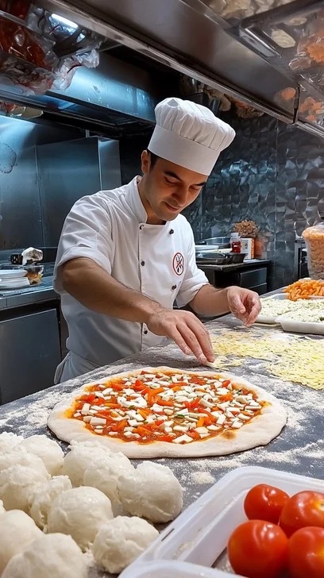
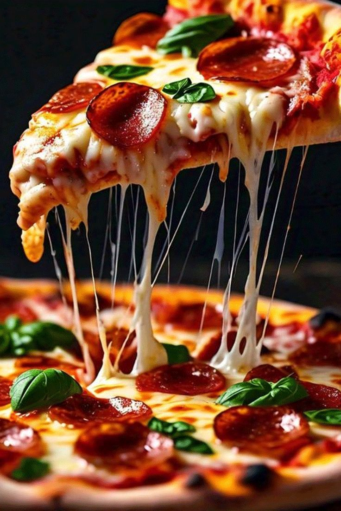
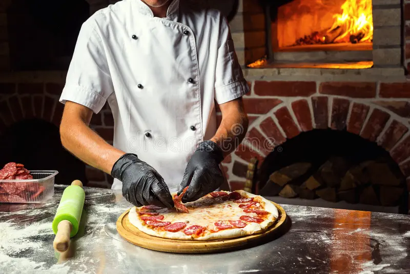
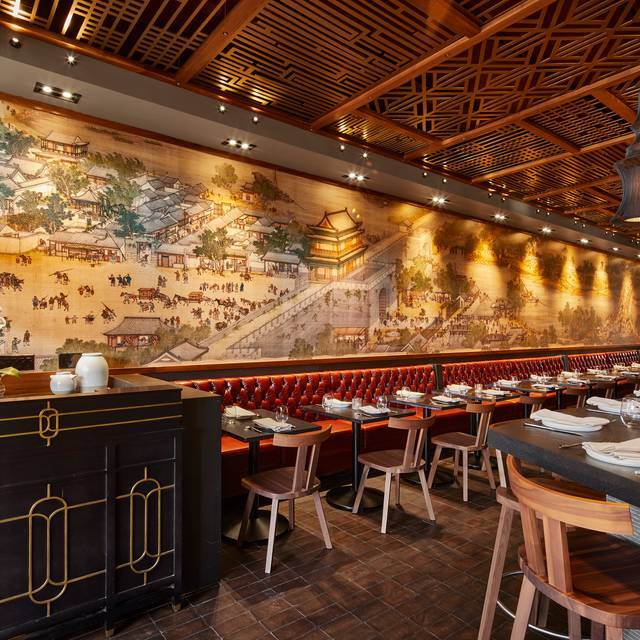

Our Story

Founded in 2015, Big Daddy's Pizza began with one goal: create authentic, handcrafted pizza that brings people together.
Our dough is prepared daily, our sauces are made in-house, and every pizza is baked to perfection.
From classic pepperoni to specialty creations, each pie is crafted with passion and attention to detail. But Big Daddy’s Pizza is about more than just food — it’s about creating a welcoming space where families celebrate milestones, friends gather after games, and neighbors connect over a shared meal.
We are proud to serve our community and remain dedicated to delivering fresh flavors,
friendly service, and an unforgettable dining experience every single day.
Inside Our Kitchen



Our Mission
To deliver fresh, flavorful pizza in a welcoming environment where families and friends can gather.